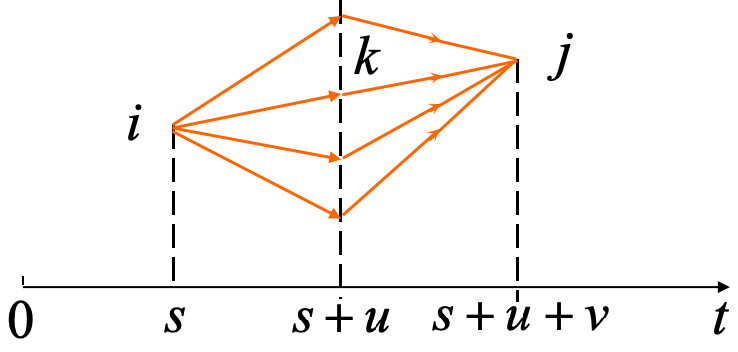
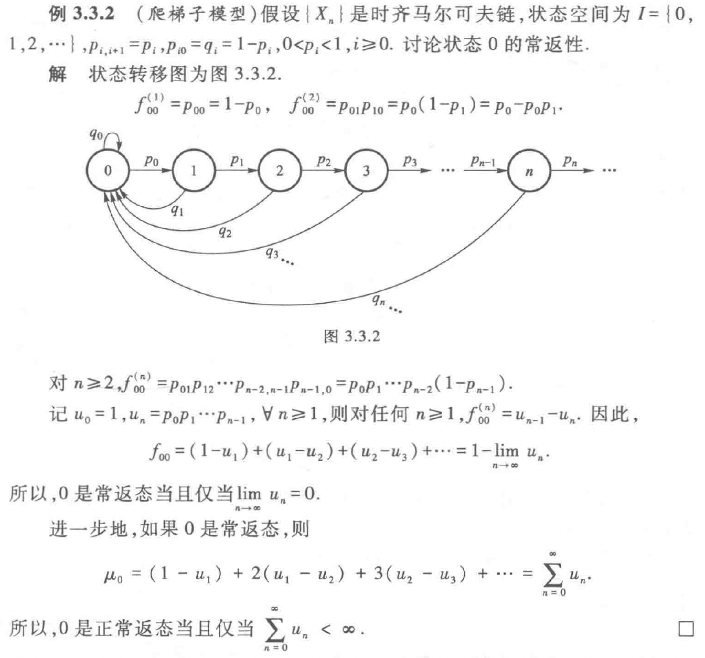
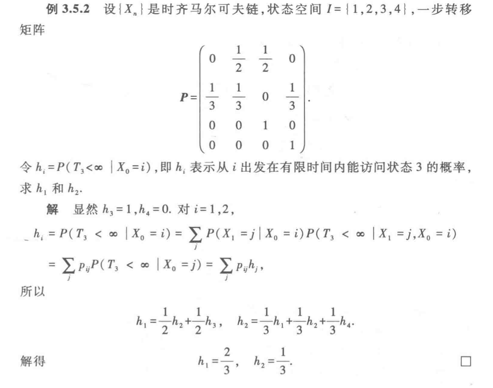
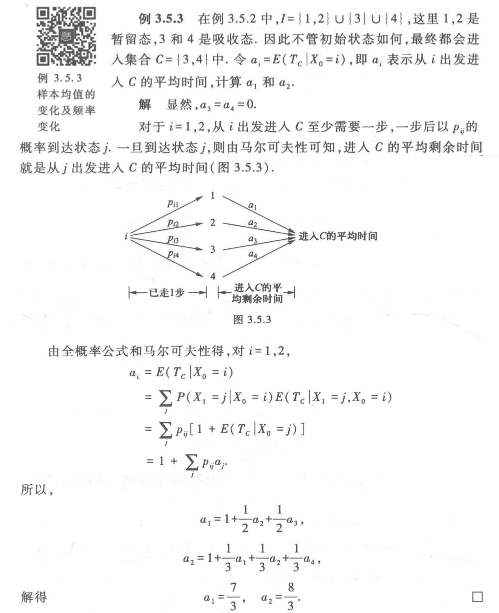
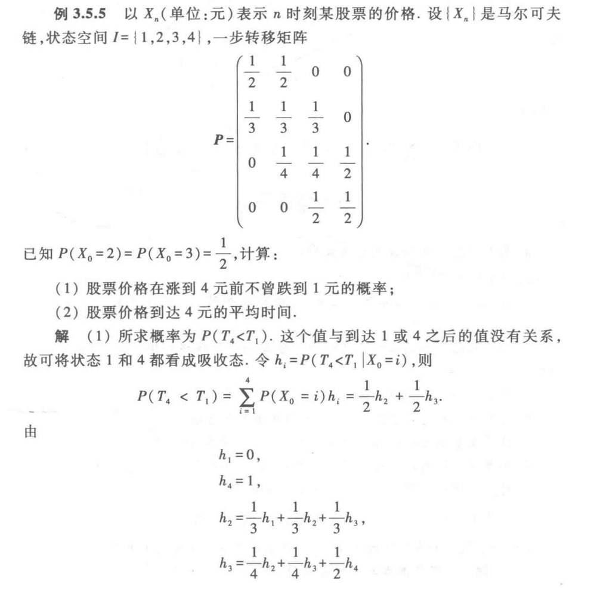
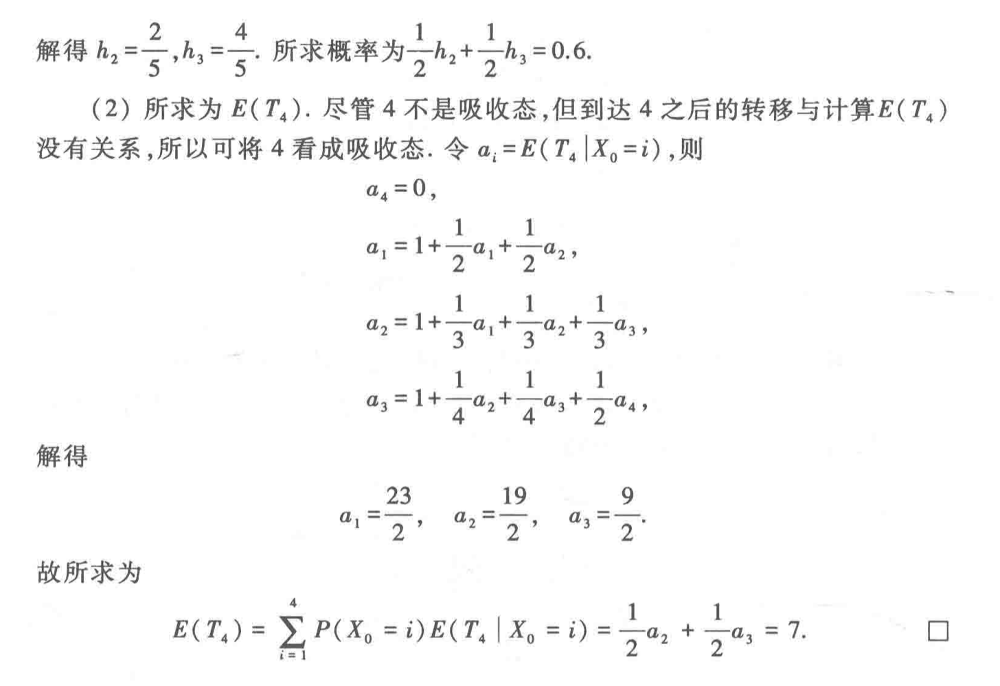
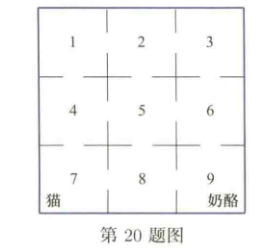

02 | 马尔可夫链 ¶
约 9603 个字 7 张图片 预计阅读时间 38 分钟
Cheet Sheet¶
| 字母 | 含义 |
|---|---|
| \(X_n\) | \(n\) 时刻的状态 |
| \(p_{ij}(m,m+n)\) | \(m\) 时刻经过 \(n\) 步从状态 \(i\) 到状态 \(j\) 的概率 |
| \(\mathbf P\) | 一步转移矩阵 |
| \(\mathbf P^{(n)}\) | \(k\) 步转移矩阵 |
| \(C_i\) | 互达等价类 |
| \(T\) | 余下状态 |
| \(d(i)\) | 状态 \(i\) 的周期 |
| \(f_{ij}\) | 从状态 \(i\) 出发在有限步首次到达状态 \(j\) 的概率 |
| \(f_{ij}^{(n)}\) | 从状态 \(i\) 出发在 \(n\) 步首次到达状态 \(j\) 的概率（f 联想 first，记忆是第一次到达） |
| \(\mathbf\pi\) | 平稳分布向量 |
| \(\mu_i\) | 状态 \(i\) 的平均回转时间 |
| \(n\) | 时间步数 |
1️⃣转移矩阵 画出状态转移图，写出一步转移矩阵。观察状态转移图：求平稳分布 : \(\pi = \pi P\)（左乘）
- \(p_{ij}^{(n)}\): 求出 \(P^{(n)}\) 后，\(p_{ij}^{(n)}\) 为 \(P^n\) 的第 \(i\) 行第 \(j\) 列的元素
2️⃣等价类 只要某几个状态两两互达，则为一互达等价类。若任一状态常返，则闭；反之不闭。
- 互达等价类的周期、常返性都一样
3️⃣周期：对周期的判断则看返回步数的所有可能取值，如果有指向自己的步，则非周期，若出现质数，则非周期；反之，周期为其最大公约数。
- \(f_{ij}^{(k)}\): 为从状态 \(i\) 出发在 \(n\) 步首次到达状态 \(j\) 的概率 : 直接数一下有几种情况即可
4️⃣ 若某一状态一旦出去就回不来了，则暂留；若还能回来，则正常返。
5️⃣ 求平均回转时可先进行状态分解，在互达等价类内部求平稳分布 \(\pi\) ，平均回转时即倒数。
- 平稳分布 \(\pi = \pi P\) （左乘）
6️⃣ 求 \(n\) 步转移概率 / 稳态概率 \(\lim p_{AB}^{(n)}\) ，方法同 ⑤ 。若某一状态暂留，则 \(n\) 步后到该状态的概率 / 稳态概率为 0 ；反之为 \(B\) 状态对应的 \(\pi\) 值。
7️⃣求吸收概率 / 吸收时间：找到吸收态，定义不同吸收态的取值，列出 1 步之后的方程，求解得到概率。
- 吸收概率不 +1
- 吸收时间 / 步数 要 +1
- 常见翻译成吸收态的题目（首中时，\(T_1>T_0\)）
Markov 性 ¶
- 无记忆性：\(P(X_{n+1}=j\mid X_0=i_0,\cdots,X_{n-1}=i_{n-1},X_n=i)=P(X_{n+1}=j\mid X_n=i)\)
- 在知道当前状态的情况下，过去与将来相互独立。
- 当前时刻状态决定了下一时刻的随机过程的分布也决定了下一时刻不可能是哪些分布
时齐 Markov 链 ¶
K 步转移概率只与时间间隔 K 有关，与当前所处状态无关
若 \(\forall\;i,j\quad P(X_{n+1}=j\mid X_n=i)\) 不依赖于 \(n\) ，则称 {\(X_n\)} 是时齐的 \(Markov\) 链
时齐的 Markov 链的有限维分布完全由初始分布和一步转移矩阵决定
转移矩阵 ¶
\(m\) 时处于状态 \(i\) 的条件下，到 \(n\) 时转移到状态 \(j\) 的概率 \(P(X_n=j\mid X_m=i)\overset{记为}\Longrightarrow p_{ij}(m,n)\) 。
① 各元素非负
② 各行元素之和为 1
一步转移 ¶
- 一步转移概率 :\(P(X_{n+1}=j\mid X_n=i)\overset{记为}\Longrightarrow p_{ij}\)
- 一步转移矩阵 :\(\mathbf P=[\;p_{ij}\;]_{I\times I}\)
\(k\) 步转移矩阵 ¶
- \(k\) 步转移概率 :\(P(X_{n+k}=j\mid X_n=i)\overset{记为}\Longrightarrow p_{ij}^{(k)}\)
- \(k\) 步转移矩阵 :\(\mathbf P^k=[\;p^{(k)}_{ij}\;]_{I\times I}\)
C-K 方程 ¶

\(\forall\;m,n,l\geq0\quad i,j\in I\qquad p_{ij}(m,m+n+l)=\sum_kp_{ik}(m,m+n)·p_{kj}(m+n,m+n+l)\)
类似于化学当中算焓变
① 由转移图推得任一概率 \(\forall\;n\geq1\quad P(X_n=j)=\sum_iP(X_0=i)·p_{ij}^{(n)}\)
② \(\forall\;n_1<n_2<\dots<n_k\quad P(X_{n_1}=i_1,\dots,X_{n_k}=i_k,)=P(X_{n_1}=i_1)·p_{i_1i_2}^{(n_2-n_1)}\dots p_{i_{k-1}i_k}^{(n_k-n_{k-1})}\)
时齐 \(Markov\) 链的有限维分布完全由初始分布与一步转移矩阵决定。
常返和暂留 ¶
\(\tau_i=min(n\geq1;X_n=i)\) 为首次击中状态 \(i\) 的时间（首中时
- 第 \(n\) 步击中概率 \(f_{ij}^{(n)}\) 为从状态 \(i\) 出发在 \(n\) 步首次击中状态 \(j\) 的概率。
- \(i\) 出发在有限步能够击中状态 \(j\) 的概率 \(f_{ij}\quad f_{ij}=P(\tau_j<\infty\mid X_0=i)\)
- \(f_{ij}=\sum f_{ij}^{(n)}\) 。
首次击中很关键
常返 ¶
- 首中时间 \(\tau_i\): 从状态 \(i\) 出发能在有限时间内返回状态 \(i\)
性质：
- \(i\) 常返
\(\Leftrightarrow\) \(\sum_{n=0}^{\infty} p_{ii}^{(n)} = \infty\)
\(\Leftrightarrow\) \(f_{ii} = 1\)
\(\Leftrightarrow\) 从 \(i\) 出发以概率 1 返回状态 \(i\) 无穷多次
暂留 ¶
不满足常返的。
- 有概率回不到初始状态
- \(f_{ii}<1\)
- \(\Leftrightarrow P(N_i<\infty\mid X_0=i)=1\)
- \(\Leftrightarrow \sum_{n=0}^{\infty} p_{ii}^{(n)} < \infty\)
平均回转时 ¶
\(\mu_i=\sum nf_{ii}^{(n)}=\begin{cases}<\infty\qquad正常返\\[2ex]=\infty\qquad零常返\end{cases}\)
走回原地的步数的期望，每一步的概率是 \(f_{ii}^{(n)}\)
- 返回 \(i\) 的时间间隔有长有短，但根据大数定律保证，访问 i 的频率和时间间隔 \(\mu_i\) 是一样的
状态空间的划分 ¶
可达 ¶
\(i\) 能到达 \(j\) 。\(i\curvearrowright j\) 。
互达 ¶
\(i\) 能到达 \(j\) 且 \(j\) 能到达 \(i\) 。\(i\leftrightarrow j\) 。有 \(d(i)=d(j)\) 且各状态有相同的周期性与常返性。
满足自反性、对称性、传递性，是等价关系
\(\forall\;i\;j\) 互达 \(\Leftrightarrow\) \(Markov\) 链不可约
互达等价类 ¶
所有处于同一互达状态的集合。状态空间可分为不交的互达等价类的并集。
闭集 ¶
一旦进入此互达等价类中的状态便不再进入非该互达等价类的其他状态。
周期 ¶
\(d(i)\) 为集合 \(\{n;n\geq1;p_{ii}^{(n)}>0\}\) 可能取值的最大公约数。
- \(i\) 非周期 \(\Leftrightarrow\) \(d(i)=1\) 。
- { \(X_n\) } 遍历 \(\Leftrightarrow\) { \(X_n\) } 不可约非周期正常返。
求法
- 求 \(p_{ii}^{1}\)，如果 \(p_{ii}^{1}>0\)，则 \(d(i)=1\)，非周期正常返
- \(p_{ii}^{2},p_{ii}^{3},\dots\)，并求最大公约数，如果是 1，则 \(d(i)=1\)，非周期正常返
平稳分布 ¶
\(\mathbf{\pi}=(\pi_1,\pi_2,\pi_3,\dots,\pi_n)\) 代表稳态时各个状态的含量。满足
① \(\mathbf{\pi}=\mathbf{\pi}\mathbf{P}\) （\(\mathbf{P}\) 为一步转移矩阵）
② \(\sum\pi_i=1\)
根据这两个式子列方程求解平稳分布
不可约Markov链的性质 ¶
① 若 { \(X_n\) } 正常返，则 \(\pi\) 存在且唯一，\(\pi_i=\frac 1{\mu_i}\) 。
② 若 { \(X_n\) } 遍历，则 \(\forall\;i,j\quad \underset{{n\rightarrow\infty}}\lim P_{ij}^{(n)}=\pi_j\rightarrow \underset{{n\rightarrow\infty}}\lim P(X_n=j)=\pi_j\) 。
无论你从哪个状态开始，经过足够长时间后，系统会达到一个与初始状态无关的稳定的状态分布
③ 若状态空间有限，则 { \(X_n\) } 正常返。
可约 \(Markov\) 链的性质 ¶
① \(i\) 的互达等价类不闭 \(\rightarrow\) \(i\) 暂留， \(i\) 常返 \(\rightarrow\) \(i\) 的互达等价类关闭。
② \(i\) 的互达等价类是有限闭集 \(\rightarrow\) \(i\) 正常返。
③ 若 \(j\) 暂留或零常返，则 \(\forall\;i\quad\underset{{n\rightarrow\infty}}\lim p_{ij}^{(n)}=0\)
有限Markov链的状态分解 ¶
可将状态空间分解为所有不交的互达等价类 \(C_i\) 与余下状态 \(T\) 的并集，则 \(C_i\) 中各状态正常返，\(T\) 中各状态暂留。则将 { \(X_n\) } 限制在 \(C_i\) 上得到一个不可约正常返的 \(Markov\) 链，其满足 \(\pi_i=\frac 1{\mu_i}\) 。
吸收概率与平均吸收时间 ¶
先走一步法
设状态 \(a\) 为吸收态，\(P_i\) 为状态 \(i\) 进入状态 \(a\) 的概率 / 时间，则 \(P_b=\sum p_{bc_i}·P_{c_i}\)
其中 \(p_{bc_i}\) 为一步转移概率。
在 A 点完成的概率，等于从 A 点走一步概率的加和
- 吸收概率不用 +1
- 吸收时间需要 +1
例题 ¶
求初始分布、绝对分布、极限分布、平稳分布 ¶
①绝对分布 : 初始分布和 n 步转移概率的乘积
②对于状态空间有限的齐次马氏链 , 如果其某一步转移概率矩阵的每一个元素都大于零 , 则该链是遍历的
③定理 : 遍历的齐次马氏链的极限分布是平稳分布
④定理 : 如果齐次马氏链的初始分布为平稳分布 , 则初始分布也为绝对分布
设 { \(X_n\;;\;n\geq0\) } 是时齐的 \(Markov\) 链，状态空间 \(I\) = {1,2,3,4,5,6}，一步转移概率为：\(p_{11}=p_{54}=p_{62}=0.4\) ，\(p_{12}=p_{56}=p_{65}=0.6\) ，\(p_{21}=p_{34}=p_{43}=1\) 。
graph TD;
1 -->|0.4| 1;
1 -->|0.6| 2;
2 -->|1.0| 1;
3 -->|1.0| 4;
4 -->|1.0| 3;
5 -->|0.4| 4;
5 -->|0.6| 6;
6 -->|0.4| 2;
6 -->|0.6| 5;（1）所有互达等价类为 \(C_1\)={1,2} \(C_2\)={3,4} \(C_3\)={5,6} 其中 \(C_1\; C_2\) 是闭的。
（2）\(d(1)=d(2)=1\quad d(3)=d(4)=d(5)=d(6)=2\) 即状态 1、2 非周期。
（3）状态 1、2、3、4 正常返，状态 5、6 暂留。
（4）\(\because\pi=(\frac58,\frac38,\frac12,\frac12)\) \(\therefore(\mu_1,\mu_2,\mu_3,\mu_4)=(\frac85,\frac83,2,2)\)
（5）\(\underset{{n\rightarrow\infty}}\lim p_{12}^{(n)}=\pi_2=\frac38\)，\(\underset{{n\rightarrow\infty}}\lim p_{55}^{(n)}=0\)
（6）\(\underset{{n\rightarrow\infty}}\lim P(X_n=3)=\pi_3=\frac12\)， \(\underset{{n\rightarrow\infty}}\lim P(X_n=6)=0\)
通过题目背景求解平稳分布 or 转移概率 ¶
若顾客的购买情况不受到过去购买历史的影响。现在市场上供应了 A, B, C 厂家生产的三种不同的味精，以 \(X(n)=1, X(n)=2, X(n)=3\) 分别表示顾客第 \(n\) 次购买 A, B, C 厂的味精。
若已知顾客第一次购买三个厂味精的概率分布为：\((0.2, 0.4, 0.4)\)，又知道一步转移矩阵为：
求：
(1) 顾客第二次购买各厂味精的概率
(2) 预测经过多次购买之后，顾客的购买倾向
解得：
明天是否有雨仅与今天的天气有关，而与过去的天气无关。又假设今天下雨而明天也下雨的概率为 \(\alpha\)，今天无雨明天有雨的概率为 \(\beta\)；规定有雨天气为状态 0，无雨天气为状态 1。设 \(\alpha = 0.7\)，\(\beta = 0.4\)。求今天有雨且第四天仍然有雨的概率
解：
一步转移概率为 :
今天有雨且第四天仍然有雨的概率 : 0.5749
设任意连续的两天中，雨天转晴天的概率为 \(\frac{1}{3}\)，晴天转雨天的概率为 \(\frac{1}{2}\)，任意一天中晴天和雨天为互斥事件，以 0 表示晴天状态，以 1 表示雨天状态，\(X_n\) 表示第 n 天的状态
解：
1） 写出该马氏链的一步转移概率
2） 在第一天为晴天的条件下 , 第三天为晴天 , 第五天为雨天的概率各为多少
常返态性、周期、回转时 ¶

各状态互达 , 因为 \(p_{00}>0\), 所以 \(d(0)=1\), 因此各状态周期为 1. 这是一个不可约非周期的马尔可夫链 . 各状态的常返性与状态 0 的常返性相同 . 所以 ,
- 当 \(\lim_{n\to\infty}u_{n}>0\) 时 , 各状态暂留 ;
- 当 \(\lim_{n\to\infty}u_{n}=0\) 但 \(\sum_{n=0}^{\infty}u_{n}=\infty\) 时 , 各状态零常返 ;
- 当 \(\sum_{n=0}^{\infty}u_{n}<\infty\) 时 , 各状态正常返 .
例题 - 给出一个转移图
设 \(\{X_n;n\geq0\}\) 是时齐的 Markov 链，状态空间 \(I=\{1,2,3,4,5,6\}\)，一步转移概率为：\(p_{11}=p_{54}=p_{62}=0.4\)，\(p_{12}=p_{56}=p_{65}=0.6\)，\(p_{21}=p_{34}=p_{43}=1\)。
(1) 求出所有的互达等价类，并指出哪些是闭的；
(2) 求出各状态的周期和常返性；
(3) 计算所有正常返态的平均回转时；
(4) 计算 \(\lim\limits_{n\to\infty}p_{12}^{(n)}\) 和 \(\lim\limits_{n\to\infty}p_{55}^{(n)}\)。
答案
(1) 互达等价类：\(\{1,2\}\)，\(\{3,4\}\)，\(\{5,6\}\)，其中 \(\{1,2\}\)，\(\{3,4\}\) 是闭的
(2) \(1,2,3,4\) 为正常返状态，\(5,6\) 为暂留状态；\(1,2\) 为非周期状态，\(3,4,5,6\) 的周期为 \(2\)。
(3)
得 \((\pi_1,\pi_2)=(\frac{5}{8},\frac{3}{8})\)，\((\pi_3,\pi_4)=(\frac{1}{2},\frac{1}{2})\)，所以 \((\mu_1,\mu_2,\mu_3,\mu_4)=(\frac{8}{5},\frac{8}{3},2,2)\)
(4) \(\lim\limits_{n\to\infty}p_{12}^{(n)}=\pi_2=\frac{3}{8}\)，\(\lim\limits_{n\to\infty}p_{55}^{(n)}=0\)
例题
设 \(\{X_n; n \geq 0\}\) 是时齐的 Markov 链，状态空间 \(I = \{1,2,3,4,5,6\}\)，一步转移概率为； \(p_{12} = p_{13} = p_{43} = p_{45} = p_{54} = p_{56} = p_{65} = p_{63} = \frac{1}{2}, p_{21} = \frac{1}{3}, p_{23} = \frac{2}{3}, p_{32} = 1\)；
初始分布为 \(P(X_0 = 1) = P(X_0 = 6) = 1/2\)。
(1) 求出所有的互达等价类，并指出哪些是闭的； (2) 求出各状态的周期和常返性； (3) 计算所有正常返态的平均回转时；
答案
(1) 互达等价类有：\(\{1,2,3\}\)，\(\{4,5,6\}\)， 其中 \(\{1,2,3\}\) 闭
(2) \(1,2,3\) 正常返，非周期 \(4,5,6\) 暂留，周期为 \(2\)
(3)
$\{X_n\}$ 限制在 $\{1,2,3\}$ 上得到一个新的 Markov 链，其平稳分布满足：
**注意这里要代入平稳分布的**$\pi=\pi P$，和先走一步法进行区分
$$
\begin{cases}
\pi_1 + \pi_2 + \pi_3 = 1 \\
\pi_1 = \dfrac{1}{3} \pi_2 \\
\pi_2 = \dfrac{1}{2} \pi_1 + \pi_3
\end{cases}
$$
解得
$$
\pi_1 = \dfrac{2}{13},\quad \pi_2 = \dfrac{6}{13},\quad \pi_3 = \dfrac{5}{13}
$$
$$
\therefore\ \mu_1 = \dfrac{13}{2},\quad \mu_2 = \dfrac{13}{6},\quad \mu_3 = \dfrac{13}{5}
$$
(4)
因为456都是非闭的暂留状态，所以$P=0$，直接套上一问算出来的平稳分布即可
$\lim P(X_n = 2) = \frac{6}{13}, \; \lim P(X_n = 5) = 0$
例题
设 \(\{X_{n};\, n \geq 0\}\) 是时齐的 Markov 链，状态空间 \(I = \{1,2,3,4,5,6\}\)，一步转移概率为：
若初始分布为 \(P(X_{0} = i) = \frac{1}{6},\; i = 1,2,\dots,6\)。请回答下列问题：
-
\(f_{32}^{(3)} =\) ( )
(A) \(0\) (B) \(\frac{1}{2}\) (C) \(\frac{1}{3}\) (D) \(\frac{1}{4}\)
-
下列叙述中正确的是 ( )
(A) 互达等价类为 \(\{1,2,3\}\)、\(\{4,5\}\)
(B) \(d(1) = d(2) = d(3) = 3,\) \(d(4) = d(5) = d(6) = 1\)
(C) \(\{1,2,3\}\) 是闭集，\(\{4,5,6\}\) 不是闭集
(D) 状态 \(1,2,3\) 是正常返的，状态 \(4,5,6\) 是暂留的
-
状态 \(4,5\) 的平均回转时为 ( )
(A) \(\mu_{4}=3,\) \(\mu_{5}=\frac{3}{2}\) (B) \(\mu_{4}=\frac{3}{2},\) \(\mu_{5}=3\)
(C) \(\mu_{4}=2,\) \(\mu_{5}=2\) (D) \(\mu_{4}=\frac{1}{2},\) \(\mu_{5}=\frac{1}{2}\)
-
\(\displaystyle\lim_{n\rightarrow\infty}p_{45}^{(n)}\) 的值为 ( )
(A) \(0\) (B) \(\frac{2}{3}\) (C) \(\frac{1}{3}\) (D) \(\frac{1}{2}\)
-
\(\displaystyle\lim_{n\rightarrow+\infty}P(X_{n}=k),\ k=4,5\) 分别为 ( )
(A) \(0,\ 0\) (B) \(\frac{1}{2},\ \frac{1}{4}\)
(C) \(\frac{1}{3},\ \frac{1}{6}\) (D) \(\frac{5}{18},\ \frac{5}{36}\)
答案 A D B C D
对于常返态，最终概率为 0，其余为 \(\pi\)
吸收概率与吸收时间 ¶
例题 1 
例题 2 
例题 3  
例题
对于一个马尔可夫过程，状态空间为 \(\{1,2,3\}\)，其状态转移矩阵为
初始状态为 \(P(X_0=1) = P(X_0=2) = \frac{1}{2}\)。
计算：
(1) \(P(X_2=2) = \_\_\_\)
(2) \(P(X_0=2, X_1=2, X_3=3) = \_\_\_\)
(3) \(P(X_3=3) = \_\_\_\)
(4) \(P(X_1=1|X_2=2) = \_\_\_\)
(5) 记 \(T_3\) 为状态 3 的首中时，求 \(E(T_3) = \_\_\_\)
答案
例题
设 \(\{X_{n};n\geq0\}\) 是时齐的 Markov 链，状态空间 \(I=\{1,2,3,4\}\)，一步转移矩阵
已知 \(P(X_{0}=1)=1/4\)，\(P(X_{0}=2)=3/4\)。
计算
（1）\(P(X_{2}=2)\)；
（2）\(P(X_{1}=2,X_{3}=2,X_{4}=4)\)；
（3）\(P(X_{0}=1|X_{1}=1)\)；
（4）令 \(T_{4}=\min\{n\geq0:X_{n}=4\}\)，求 \(P(T_{4}<\infty)\)。
答案
（1）\(=\frac{5}{4}\times\frac{5}{16}=\frac{9}{64}\)
（2）\(=\frac{3}{4}\times\frac{1}{4}\times\frac{3}{16}\times\frac{1}{4}=\frac{9}{1024}\)
（3）\(=\frac{P(X_{0}=1,X_{1}=1)}{P(X_{1}=1)}=\frac{4}{7}\)
（4）这个题目首先要看懂问题求的是吸收概率，这个题目 1 和 4 都是吸收态，这里求的是 4 的吸收概率。
所以有 \(h_4 = 1,h_1 =0\)
可以列式求得
\(h_{2}=\frac{1}{4}(h_{2}+h_{3}+1)\)，\(h_{3}=\frac{1}{2}(h_{2}+1)\)
得 \(h_{2}=\frac{3}{5}\)
即求得初始在 2 的有 \(\frac35\) 的概率进入到 4
\(\therefore P(T_{4}<\infty)= P_2 \cdot h_2= \frac{3}{4}h_{2}=\frac{9}{20}\)
例题 - 输光模型
甲乙两人玩游戏，每局甲赢一元的概率为 0.4，输一元的概率为 0.3，平局的概率为 0.3，假设一开始甲有 1 元，乙有 2 元，游戏直到某人输光为止，\(X_{n}\) 为第 n 局后甲拥有的钱数，则 {\(X_{n};n\geq1\)} 是一个时齐的 Markov 链，状态空间 \(I=\{0,1,2,3\}\)，求
（1）一步转移矩阵 \(P\)；
（2）\(P(X_{2}=1)\)；
（3）\(P(X_{2}=1,X_{4}=2)\)；
（4）甲输的概率。
答案
（1）\(P=\begin{pmatrix}1&0&0&0\\0.3&0.3&0.4&0\\0&0.3&0.3&0.4\\0&0&0&1\end{pmatrix}\)
（2）\(P(X_{2}=1)=p_{11}p_{11}+p_{12}p_{21}=0.3\times0.3+0.4\times0.3=0.21\)
（3）\(P(X_{2}=1,X_{4}=2)=P(X_{2}=1)(p_{11}p_{12}+p_{12}p_{22})=0.0504\)
（4）
例题 - 输光模型选择题
甲乙两人玩游戏，每局甲赢一元、输一元、平局的概率都为 \(1/3\)，假设一开始甲有 \(1\) 元，乙有 \(2\) 元，游戏直到某人输光为止。记 \(X_{n}\) 为第 \(n\) 局后甲拥有的钱数，则 \(\{X_{n}; n \geq 0\}\) 是一个时齐的 Markov 链，状态空间 \(I = [0,1,2,3]\)。请回答下列问题：
-
甲每玩一局游戏，平均来说能赢钱数（元）为（ ） - (A) \(-\dfrac{1}{3}\) (B) \(0\) (C) \(\dfrac{1}{3}\) (D) \(\dfrac{2}{3}\)
-
一步转移矩阵 \(P\) 为（ ） - (A) \(\begin{pmatrix} \frac{1}{3} & \frac{1}{3} & 0 & 0 \\ \frac{1}{3} & \frac{1}{3} & \frac{1}{3} & 0 \\ 0 & \frac{1}{3} & \frac{1}{3} & \frac{1}{3} \\ 0 & 0 & \frac{1}{3} & \frac{1}{3} \end{pmatrix}\) - (B) \(\begin{pmatrix} 1 & \frac{1}{3} & 0 & 0 \\ 0 & \frac{1}{3} & \frac{1}{3} & 0 \\ 0 & \frac{1}{3} & \frac{1}{3} & 0 \\ 0 & 0 & \frac{1}{3} & 1 \end{pmatrix}\) - (C) \(\begin{pmatrix} 1 & 0 & 0 & 0 \\ 0 & \frac{1}{3} & \frac{1}{3} & \frac{1}{3} \\ \frac{1}{3} & \frac{1}{3} & \frac{1}{3} & 0 \\ 0 & 0 & 0 & 1 \end{pmatrix}\) - (D) \(\begin{pmatrix} 1 & 0 & 0 & 0 \\ \frac{1}{3} & \frac{1}{3} & \frac{1}{3} & 0 \\ 0 & \frac{1}{3} & \frac{1}{3} & \frac{1}{3} \\ 0 & 0 & 0 & 1 \end{pmatrix}\)
-
\(P\{X_{2}=1\}=\)（ ） - (A) \(1/9\) (B) \(2/9\) (C) \(1/3\) (D) \(1/2\)
-
甲输的概率为（ ） - (A) \(1/6\) (B) \(1/3\) (C) \(1/2\) (D) \(2/3\)
-
游戏结束时所需的平均游戏次数为（ ） - (A) \(2\) (B) \(5/2\) (C) \(3\) (D) \(7/2\)
答案 B D B D C
t4 相当于是求点 1 的吸收概率 ,h1=1,h4=0
t5 是进入 1 或 4 这两个吸收态的平均步数。h1=h4=0, 注意加 1，注意这两步用的都是先走一步法，和求平稳分布上不一样
习题 ¶
习题三 1,3,5,7,8
- ( 伯努利 - 拉普拉斯扩散模型 ) 设 A, B 两箱中各有 \(m\) 个球，其中共 \(m\) 个白球 \(,m\) 个黑球 . 记 \(X_0\) 是开始时 A 箱中的白球个数 . 然后每次从两箱中各任取一球交换，\(X_n\) 表示 \(n\) 次交换后 A 箱中白球个数说明 \(\{X_n\}\) 是一个时齐马尔可夫链，写出状态空间和一步转移概率 . 这也是一个关于两种液体混合的概率模型 .
解：
设 $ Y_n = X_{n+1} - X_n $
且与 $ X_0 $ 无关，因此 $ {X_n} $ 是时齐马尔可夫链
状态空间 $ I = {0, 1, cdots, m} $
一步转移概率：
3.3¶
设 \(X_{1}, X_{2}, \cdots\) 独立同分布 , \(P(X_{i}=1)=p=1-P(X_{i}=0)\), \(0<p<1\). 对 \(n \geqslant 1\), 令
为第 \(n\) 次出现的 1 的游程长度 . 例如 , \((X_{1}, X_{2}, X_{3}, X_{4}, X_{5})=(1,0,1,1,1)\), 那么对应的 \((L_{1}, L_{2}, L_{3}, L_{4}, L_{5})=(1,0,1,2,3)\). 则 \(\{L_{n}\}\) 是一时齐马尔可夫链 , 写出它的状态空间和一步转移概率 .
解：
状态空间 $ I = {0, 1, cdots, n} $
一步转移概率：
3.5¶
独立重复掷骰子 , 令 \(X_{n}\) 表示第 \(n\) 次得到的点数 , 令 \(Y_{n} = \max \{X_{n+1}, X_{n+2}\}\), \(Z_{n} = X_{n+1} + X_{n+2}\), \(\forall n \geqslant 0\).
(1) 计算 \(P(Y_{2} = 1 \mid Y_{0} = 1, Y_{1} = 6)\), \(P(Y_{2} = 1 \mid Y_{1} = 6)\); (2) 计算 \(P(Z_{2} = 12 \mid Z_{0} = 2, Z_{1} = 7)\), \(P(Z_{2} = 12 \mid Z_{1} = 7)\); (3) 判断 \(\{Y_{n}\}\) 和 \(\{Z_{n}\}\) 是否具有马尔可夫性? 说明理由.
解：
- 由已知条件
因此 $$ Y_2 = max{X_3, X_4} geq 6 $$
计算 \(P(Y_2 = 1 \mid Y_1 = 6)\):
计算 \(P(Z_2 = 12 \mid Z_1 = 7)\):
3.7¶
- 在单位圆上等距取 3 个点，按顺时针方向记为 0,1,2。当一质点位于状态 \(i (i = 0, 1, 2)\) 时，下一时刻以 \(\frac{2}{3}\) 概率顺时针走一格，以 \(\frac{1}{3}\) 概率逆时针走一格。以 \(X_0\) 表示初始时刻的位置，设 \(P(X_0 = 0) = \frac{1}{2}\)，\(P(X_0 = 1) = P(X_0 = 2) = \frac{1}{4}\)。令 \(X_n\) 表示 \(n\) 时刻质点所处的位置，则 \(\{ X_n; n = 0, 1, \cdots \}\) 是一时齐马尔可夫链。 (1) 计算一步转移矩阵； (2) 计算 \(P(X_0 = 0, X_2 = 0, X_4 = 1)\) 和 \(P(X_2 = 1)\)。
解：
3.8¶
设 \(\{X_n\}\) 是一时齐马尔可夫链 , 状态空间为 \(\{0,1,2\}\), 一步转移矩阵为
设 \(P(X_0 = 0) = P(X_0 = 1) = P(X_0 = 2) = \frac{1}{3}\). (1) 计算 \(P(X_2 = 0 | X_0 = 0)\) 和 \(P(X_0 = 0 | X_2 = 0)\); (2) 计算 \(P(X_1 = 0)\) 和 \(P(X_1 = 0, X_3 = 0, X_4 = 1, X_6 = 1)\); (3) 计算 \(f_{11}^{(n)}\), \(f_{11}\) 和 \(\mu_1\)
解：
我们先求出其转移矩阵
因此 \(f_{11} = \sum f_{11}^{(n)} = \frac{7}{9}+4\cdot \lim_{n\to \infty }\frac{\frac{1}{27}(1-(\frac{1}{3})^n)}{1-\frac{1}{3}}=1\) 为常返
3.10¶
设 \(\{X_{n}\}\) 是一时齐马尔可夫链 , 状态空间为 \(\{0, 1, 2, 3\}\), 一步转移矩阵为
设 \(P(X_{0}=0)=P(X_{0}=1)=P(X_{0}=3)=\frac{1}{3}\).
(1) 计算 \(P(X_{1}=1, X_{3}=2)\), \(P(X_{2}=1)\) 和 \(P(X_{10}=0)\);
(2) 求出各状态的常返性 , 并计算正常返态的平均回转时 .
stateDiagram-v2
0 --> 0: 0.5
0 --> 1: 0.5
1 --> 1: 0.5
1 --> 2: 0.5
2 --> 1: 0.333
2 --> 2: 0.667
3 --> 3: 1.03.17¶
设 \(\{X_{n}\}\) 是一时齐马尔可夫链 , 状态空间为 \(\{0,1,2,3,4,5,6,7\}\), 一步转移概率为 \(p_{01}=p_{32}=p_{67}=1\), \(p_{10}=p_{12}=p_{21}=p_{23}=p_{54}=p_{56}=p_{76}=p_{77}=\frac{1}{2}\), \(p_{43}=p_{44}=p_{45}=\frac{1}{3}\).
(1) 写出所有互达等价类 , 并判断哪些是闭的 ?
(2) 求出各状态的周期和常返性 , 并计算正常返态的平均回转时 ;
(3) 计算 \(\lim_{n\to\infty} p_{45}^{(n)}\) 和 \(\lim_{n\to\infty} p_{67}^{(n)}\);
(4) 若 \(P(X_{0}=3)=P(X_{0}=4)=\frac{1}{2}\), 对 \(i=4,5,6,7\), 计算 \(\lim_{n\to\infty} P(X_{n}=i)\).
\(a_{00}=0,a_{11}=0\)
同理计算 \(\{6,7\}\) 的平稳分布 \((\pi_6,\pi_7)\)
(3) 因为 \(\{4,5\}\) 为暂留态，所以 \(\lim_{n\to \infty} p_{45}^{(n)} = 0\)
根据 \(\{6,7\}\) 的平稳分布可得 \(\lim_{n\to \infty} p_{67}^{(n)} = \frac{2}{3}\)
(4) 同理因为 \(\{4,5\}\) 为暂留态，所以
然后我们来考虑初始状态为 \(X_0 =3,X_0 = 4\) 分别以什么概率进入吸收态 \(\{6,7\}\)
我们令 \(h_i\) 表示以状态 \(i\) 到达状态 \(6\) 的概率，则显然 \(h_3=0,h_6=1\)
可求得 \(h_4 = \frac{1}{3},h_5 = \frac{2}{3}\)，因此
3.20¶
( 迷宫中的老鼠 ) 如图所示 , 迷宫中有九个房间 , 老鼠待在 1 号房间 , 猫待在 7 号房间 , 奶酪放在 9 号房间 . 现在假设猫不动 , 老鼠开始移动 , 由于无记忆性 , 如果 n 时老鼠待在 i 号房间 , 则 n+1 时老鼠等可能地移到 i 号房间相邻的房间 ( 即有门与 i 号房间相连的房间 ). 并且假设老鼠一旦到 7 号房间 , 猫就吃掉老鼠 , 从而认为老鼠此后就永远留在 7 号房间 ; 一旦到 9 号房间 , 老鼠就吃掉奶酪而将永远留在 9 号房间 . 用 X_{n} 表示 n 时老鼠所在的房间 , 则 {X_{n}} 是一个时齐马尔可夫链 , 写出状态空间和一步转移矩阵 , 并计算老鼠被猫吃掉的概率 .

解：
状态空间 \(I = \{1,2,3,4,5,6,7,8,9\}\)
一步转移矩阵：
令 \(h_i\) 代表从 \(i\) 出发在有限时间访问 7 号房间的概率，则有 \(h_7 =1 ,h_9=0\)
根据一步转移矩阵有如下公式：
求解上述公式可得：\(h_1 = 0.6,h_2 = 0.5,h_3 = 0.4,h_4 = 0.7,h_5=0.5,h_6 = 0.3,h_8 = 0.5\)
即老鼠被猫吃掉的概率 \(=h_1=0.6\)
3.21¶
蜘蛛和苍蝇在 0 和 1 两个位置上独立地依循马尔可夫链移动，一直到它们相遇时蜘蛛吃掉苍蝇。它们的初始位置分别是 0 和 1，转移矩阵分别为 \(\begin{pmatrix} 0.5 & 0.5 \\ 0.5 & 0.5 \end{pmatrix}\) 和 \(\begin{pmatrix} 0.4 & 0.6 \\ 0.2 & 0.8 \end{pmatrix}\). 如果假定它们相遇后将永远留在相遇的位置，令 \(X_n\) 和 \(Y_n\) 分别表示 n 时蜘蛛和苍蝇的位置，且 \(Z_n = (X_n, Y_n)\).
(1) 说明 \(\{Z_n\}\) 是一个时齐马尔可夫链，写出状态空间和一步转移矩阵； (2) 计算蜘蛛在位置 0 吃掉苍蝇的概率； (3) 求蜘蛛遇见苍蝇的平均步数.
解：
-
状态空间 \(I = \{(0,0),(0,1),(1,0),(1,1)\}\)
一步转移矩阵为
$$ P = begin{bmatrix} 1 & 0 & 0 & 0\ 0.1 & 0.4 & 0.1 & 0.4 \ 0.2 & 0.3 & 0.2 & 0.3 \ 0 & 0 & 0 & 1 end{bmatrix} $$
可以发现 \(P(X_{n+1} = j \mid X_n = i) \stackrel{\text{记为}}{=} p_{ij}\) 不依赖于 \(n\)，因此其为时齐 Markov
-
令 \(h_{ij}\) 代表 \(Z_n\) 从 \((i,j)\) 出发在有限时间到达 \((0,0)\) 的概率，则有 \(h_{00} =1 ,h_{11}=0\)
根据一步转移矩阵有如下公式：
$$ h_{01} = 0.1+0.4h_{01}+0.1h_{10} \ h_{10} = 0.2+0.3h_{01}+0.2h_{10} \ $$
求解上述公式可得 \(h_{01} = \frac{2}{9},h_{10} = \frac{1}{3}\)
因此蜘蛛在位置 0 吃掉苍蝇的概率为 \(\frac{2}{9}\)
-
我们发现 \((0,1),(1,0)\) 是暂留态，集合 C\(\{(0,0),(1,1)\}\) 为吸收态，我们令 \(a_{ij} = E(T_C| Z_{ij}=(i,j))\) 表示从 \((i,j)\) 出发进入 C 的平均步数，则有
\(a_{00}=0,a_{11}=0\)
$$ a_{01} = 1+0.4a_{01}+0.1a_{10} \ a_{10} = 1+ 0.3a_{01}+0.2a_{10} $$
求解上述公式有：\(a_{01} = 2,a_{10} = 2\)
因此蜘蛛遇见苍蝇的平均步数为 \(a_{01} = 2\)
3.23¶
一只狼从 1 处开始在状态空间 \(I = {1, 2, 3, 4}\) 上作随机游动 , 2 处有一只羊 , 3 处有一陷阱 . 狼一旦走到 3 处 , 就掉进陷阱 , 无法再走 ; 狼一旦走到 2 处 , 就吃掉羊 . 设 Xn 为走 n 步时狼所处的位置 , 则 {Xn ; n ≥ 0} 是时齐马尔可夫链 , 一步转移矩阵
计算 : (1) \(P(X1 = 4, X3 = 2)\); (2) \(P(X2 = 1 | X3 = 3)\); (3) 狼恰好在第 n 步吃掉羊的概率; (4) 狼能在掉进陷阱前吃掉羊的概率; (5) 狼掉进陷阱的平均步数.
解：
狼恰好在第 n 步吃掉羊的概率，即为 \(f_{12}^{(n)}\)
求掉进陷阱前吃掉羊的概率，即 \(P(T_2<T_3)\)，可将 \(2,3\) 均看作吸收态
令 \(h_i = P(T_2<T_3|X_0 = i)\)，则有 \(h_3 =0,h_2=1\)
根据一步转移矩阵有如下公式：
求解可得 \(h_1 = \frac{2}{5},h_4 = \frac{1}{5}\)
因此掉进陷阱前吃掉羊的概率为 \(\frac{2}{5}\)
我们发现 \(\{1,2,4\}\) 是暂留态，集合 C\(\{3\}\) 为吸收态，我们令 \(a_{i} = E(T_C| Z_{i}=(i))\) 表示从 \(i\) 出发进入 C 的平均步数，则有 \(a_{3}=0\)
求解上述公式有：\(a_{1} = \frac{5}{2},a_{2} = \frac{9}{4},a_4 =\frac{9}{4}\)
因此狼掉进陷阱的平均步数为 \(a_{1} = \frac{5}{2}\)
模型整理 ¶
状态空间 \(E = \{1,2,3,4,5\}\), 质点运动到 1, 5 时会永远停留 , 一步转移概率矩阵为
状态空间 \(E=\{1,2,3,4,5\}\), 质点运动到 1, 5 时会永远不能停留 , 一步转移概率矩阵为
状态空间 \(E=\{1,2,3,4,5\}\)，质点运动到 1, 5 时会以一定概率停留，一定概率反弹
爬梯子模型 ¶
输光模型 ¶
d 维对称随机游动 ¶
已有：当 \(d=1\) 时，\(p_{oo}^{(2n)} \sim \frac{1}{\sqrt{\pi n}}\)；当 \(d=2\) 时，\(p_{oo}^{(2n)} \sim \frac{1}{\pi n}\). 事实上当 \(d \geqslant 3\) 时，\(p_{oo}^{(2n)} = O(n^{-d/2})\)（证略
这个例子说明一维和二维对称随机游动都是零常返的，三维和三维以上对称随机游动都是暂留的。醉汉一定能回家，但喝醉的小鸟却不一定。这是因为醉汉在二维世界游走，而醉鸟飞翔于三维空间。给的空间越大，越容易逃离。
尽管没有给出当 \(d \geqslant 3\) 时的证明，但我们可以试着直观理解如下：
对于 \(d\) 维对称随机游动，它有 \(d\) 个坐标可以移动，根据大数定律，当 \(n\) 足够大时，前 \(n\) 步中约有 \(\frac{n}{d}\) 步往第 \(i\) 个坐标移动。而在这些步数中，它其实是第 \(i\) 个坐标上的一维对称随机游动。当给定各个坐标上的移动步数后，这 \(d\) 个一维对称随机游动是相互独立的。又由于经过 \(n\) 步后返回当且仅当每个坐标上的一维对称随机游动都返回。因此应该有
网页排名 ¶
网页排名是基于“从许多优质网页链接过来的网页，必定还是优质网页”的思想来判断网页的重要性。提高网页排名的主要因素有 3 个：
- 反向链接数，即链接到这个网页的数目。反向链接数越多，这个网页越重要。
- 反向链接是否来源于推荐度高的页面，重要网页链接的网页也重要。
- 反向链接页面的链接数。一个网页的链接数越多，它对它所链接的网页的重要性影响就越小。如果一个网页有 k 个链接，则它的影响就被等分成 k 份而平均地影响到它所链接的每一个页面。
因此我们先把所有的网页看成一个有向图 V，每个网页是一个顶点。如果网页 i 超链接到网页 j，就认为从 i 到 j 有一条边相连，j 就称为 i 的邻居。现在记 \(\pi_i\) 为网页 i 的重要性，规定所有网页重要性之和为 1，即 \(\sum\pi_i=1\)，则由上面 3 条得到，对任何网页 k，
这里 \(d_i\) 表示 i 的邻居数，即网页 \(i\) 的超链接数目。
让我们想象一下这样的网页访问方式：如果现在访问网页 \(i\)，则下一步等可能地访问 \(i\) 的邻居。这样就定义了有向图 \(V\) 上的随机游动，它是一个时齐马尔可夫链，状态空间为顶点集 \(V\)，一步转移概率
\(\pi_k=\sum_i\pi_ip_{ik}.\) 这样就得到了一个有趣的事实：\((\pi_i,i\in I)\) 恰好就是刚才定义的有向图 \(V\) 上随机游动的平稳分布 . 特别地，当这个随机游动遍历时 \(\operatorname* { lim} _{n\to \infty }P( X_{n}\) = \(i)\) = \(\pi _{i}\), 即访问网页 \(i\) 的极限概率为 \(\pi_i\), 因此 \(\pi_{i}\) 越大，访问网页 \(i\) 越频繁，从而网页 \(i\) 越重要